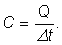
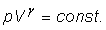
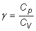
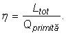
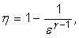
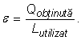
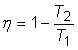
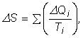

- Toate corpurile sunt alcătuite din particule (molecule) aflate în continuă mişcare de agitaţie (dezordonată).
- Dimensiunile tipice ale moleculelor sunt de ordinul nanometrului.
- Molul este cantitatea de substanţă care conţine 6,022·1023 particule independente.
- Constanta lui Avogadro este cantitatea 6,022·1023 mol-1.
- Masa molară a unei substanţe este masa unui mol din acea substanţă.
- Unitatea atomică de masă este 1/12 din masa unui atom al izotopului de 12C.
- Masa moleculară este masa unei molecule.
- Masa moleculară relativă este raportul dintre masa moleculară şi unitatea atomică de masă.
- Masa atomică este masa unui atom.
- Masa atomică relativă este raportul dintre masa atomică şi unitatea atomică de masă.
- Un sistem este partea din Univers care ne interesează. Restul Universului este mediul sistemului.
- Un sistem termodinamic este un sistem pentru care interacţiunile termice nu sunt neglijabile.
- Interacţiunea termică este transferul de energie de un corp mai cald către unul mai rece decât acesta, datorat
diferenţelor de energie cinetică medie de agitaţie termică.
- Echilibrul termic este starea atinsă de două sisteme termodinamice care pot interacţiona termic, dar nu transferă
energie unul celuilalt.
- Temperatura unui sistem termodinamic este mărimea fizică scalară care indică dacă acel sistem este sau nu în
echilibru termic cu alt sistem.
- Principiul zero al termodinamicii: Două sisteme termodinamice care sunt în echilibru termic cu un al treilea,
sunt în echilibru termic şi între ele.
- Parametrii independenţi ai unui sistem termodinamic sunt acei parametri ai sistemului ale căror valori nu depind de
valorile celorlalţi parametri.
- Numărul gradelor de libertate ale unui sistem este numărul parametrilor independenţi ai sistemului.
- Starea unui sistem termodinamic este caracterizată de setul valorilor tuturor parametrilor independenţi ai acelui
sistem.
- Transformarea unui sistem termodinamic este oricare modificare a stării acelui sistem.
- Echilibrul termodinamic este starea unui sistem care, odată atinsă, nu se mai modifică fără interacţiuni cu mediul
sistemului.
- Termometrul este instrumentul cu care măsurăm temperatura unui sistem termodinamic.
- Scara absolută de temperatură (scara Kelvin) are valoarea 0 K pentru cea mai coborâtă temperatură (-273,15°C).
- O variaţie de temperatură de un kelvin coincide cu o variaţie de temperatură de un grad Celsius.
- Relaţiile de conversie între scara absolută şi scara Celsius sunt:
T(K) = t(°C) + 273,15 K;
t(°C) = T(K) - 273,15 °C;
- Temperatura absolută a unui sistem termodinamic este măsura energiei cinetice medii de agitaţie termică a particulelor
care alcătuiesc sistemul.
- Cantitatea de căldură este energia transferată prin interacţiune termică.
- Calorimetria este domeniul termodinamicii care îşi propune măsurarea cantităţilor de căldură.
- Prin convenţie, considerăm pozitivă cantitatea de căldură primită şi negativă cea cedată.
- Primul principiu al calorimetriei: Dacă mai multe corpuri cu temperaturi iniţiale diferite interacţionează
termic, după un timp suficient de lung, ajung toate la aceeaşi temperatură.
- Al doilea principiu al calorimetriei:Suma algebrică a cantităţilor de căldură schimbate de corpurile aflate
în interacţiune termică este nulă:
Q1 + Q2 + ... = 0.
- Izolarea termică este modalitatea de împiedicare a transferului de căldură.
- Calorimetrul este o incintă care izolează termic interiorul de exteriorul său şi în care poate fi monitorizată
stabilirea echilibrului termic.
- Capacitatea calorică a unui sistem este rezultatul împărţirii cantităţii de căldură primită sau cedată de sistem la
variaţia de temperatură a acestuia:

- Căldura specifică a unei substanţe este capacitatea calorică a unei cantităţi cu masa un kilogram din acea substanţă:

- Energia internă a unui sistem termodinamic este suma dintre energia cinetică de agitaţie termică a particulelor care
alcătuiesc sistemul şi energia potenţială datorată interacţiunii dintre aceste particule.
- Căldura este forma de schimb de energie între un sistem şi mediul său, datorată diferenţei de temperatură dintre
sistem şi mediul său.
- Lucrul mecanic este forma de schimb de energie între un sistem şi mediul său care nu este datorată diferenţei de
temperatură dintre sistem şi mediul său.
- Cantitatea de căldură şi lucrul mecanic schimbate de un sistem cu mediul său în timpul unui proces sunt mărimi de
proces (depind de procesul la care participă sistemul).
- Fiecărei stări de echilibru a unui sistem termodinamic îi asociem o mărime fizică de stare − energia sa internă.
- Principiul I al termodinamicii: Variaţia energiei interne a unui sistem este suma algebrică a căldurii şi
lucrului mecanic schimbate de sistem cu mediul său:
ΔU = Q - L.
- Gazul ideal este un model simplificat de gaz, alcătuit din particule având dimensiuni neglijabile şi care nu
interacţionează decât prin ciocniri perfect elastice.
- Energia internă a gazului ideal este energia cinetică totală de agitaţie termică a particulelor gazului.
- Un grad de libertate al unei particule este oricare parametru care caracterizează poziţia particulei şi care se
poate modifica independent în timp.
- Fiecărui grad de libertate al particulelor gazului ideal îi corespunde aceeaşi energie cinetică medie (echipartiţia
energiei pe gradele de libertate).
- Gazul ideal ale cărui molecule au i grade de libertate are energia internă:

- Ecuaţia de stare a gazului ideal:

- Pentru o cantitate dată de gaz ideal, energia internă a acestuia depinde doar de temperatura absoluta a gazului.
- Transformarea izocoră este transformarea pe parcursul căreia numărul de moli şi volumul sistemului termodinamic
rămân nemodificate.
- Legea transformării izocore: Presiunea gazului ideal este direct proporţională cu temperatura absolută a
gazului:

- Căldura molară la volum constant a gazului ideal ale cărui molecule au i grade de libertate este:

- Transformarea izobară este transformarea pe parcursul căreia numărul de moli şi presiunea sistemului termodinamic
rămân nemodificate.
- Legea transformării izobare: Volumul gazului ideal este direct proporţional cu temperatura absolută a gazului:

- Căldura molară la presiune constantă a gazului ideal ale cărui molecule au i grade de libertate este:

- Relaţia Robert Mayer:
Cp - CV = R.
- Transformarea izotermă este transformarea pe parcursul căreia numărul de moli şi temperatura sistemului termodinamic
rămân nemodificate.
- Legea transformării izoterme: Presiunea gazului ideal este invers proporţională cu volumul acestuia:

- În coordonate p−V, lucrul mecanic corespunde ariei delimitată de curba transformării şi axa volumelor.
- Transformarea adiabatică este transformarea pe parcursul căreia numărul de moli nu se modifică şi sistemul nu
schimbă energie sub formă de căldură cu mediul său.
- Peretele adiabatic nu permite transferul de energie sub formă de căldură.
- Procesele rapide sunt aproape adiabatice.
- Ecuaţia transformării adiabatice (ecuaţia lui Poisson):

unde  este exponentul adiabatic.
- Starea solidă, starea lichidă şi cea gazoasă sunt stări de agregare.
- Un corp solid este aproape incompresibil şi relativ puţin deformabil.
- Un lichid este aproape incompresibil, dar deformabil.
- Un gaz este compresibil şi deformabil.
- Transformarea de stare de agregare este trecerea unui corp dintr−o stare de agregare în alta.
- Vaporii saturanţi sunt starea gazoasă a unei substanţe aflată în echilibru cu starea lichidă a aceleaişi substanţe.
- Punctul critic este starea pentru care nu există diferenţe între starea gazoasă şi cea lichidă a aceleiaşi substanţe.
- Vaporii sunt starea gazoasă a unei substanţe la temperaturi sub cea critică.
- Lichefierea este transformarea în lichid a vaporilor unei substanţe, prin comprimare.
- Vaporizarea este transformarea din stare lichidă în stare de vapori.
- Evaporarea este vaporizarea la suprafaţa lichidului.
- Vaporizarea se produce cu absorbţie de căldură.
- Condensarea este transformarea din stare de vapori în stare lichidă.
- Condensarea se produce cu degajare de căldură.
- Presiunea vaporilor saturanţi ai unei substanţe depinde doar de temperatură.
- Fierberea este procesul de vaporizare în tot volumul lichidului.
- Căldura latentă de vaporizare este cantitatea de căldură necesară vaporizării unui lichid.
- Căldura latentă specifică de vaporizare este cantitatea de căldură necesară vaporizării fiecărui kilogram dintr−o
cantitate de lichid.
- Un lichid fierbe atunci când presiunea vaporilor săi saturanţi este egală cu presiunea la care se află lichidul.
- Topirea este transformarea unei substanţe din stare solidă în stare lichidă.
- Topirea se produce cu absorbţie de căldură (căldura latentă de topire).
- Solidificarea este transformarea unei substanţe din stare lichidă în stare solidă.
- Solidificarea se produce cu eliberare de căldură (căldura latentă de solidificare), egală cu cea de topire.
- Sublimarea este transformarea unei substanţe din stare solidă direct în stare de vapori.
- Sublimarea se produce cu absorbţie de căldură (căldura latentă de sublimare), egală cu suma căldurilor latente de
topire şi vaporizare.
- Desublimarea este transformarea unei substanţe din stare de vapori direct în stare solidă.
- Desublimarea se produce cu eliberare de căldură (căldura latentă de desublimare), egală cu cea de sublimare.
- Pentru fiecare substanţă există o singură pereche de valori presiune−temperatură la care solidul, lichidul şi
vaporii săi coexistă în echilibru (punctul triplu).
- Motorul termic este o maşină care transformă în lucru mecanic o parte din energia primită sub formă de căldură.
- Randamentul unui motor termic este raportul dintre lucrul mecanic total şi căldura primită:

- Motorul Otto (motorul cu aprindere prin scânteie) funcţionează pe baza unui ciclu termodinamic aproximat de două
transformări izocore şi două transfomări adiabatice.
- Randamentul motorului Otto:

ε fiind raportul de compresie.
- Motorul Diesel (motorul cu aprindere prin compresie) funcţionează pe baza unui ciclu termodinamic aproximat de o
transformare izocoră, una izobară şi două transformări adiabatice.
- Pompa termică este o maşină care transferă energie sub formă de căldură de la o zonă mai rece către una mai caldă,
utilizând pentru aceasta energie sub formă de lucru mecanic.
- Eficienţa unei pompe termice este raportul dintre cantitatea de căldură obţinută în zona mai caldă şi lucrul mecanic
utilizat:

- Maşina frigorifică este o maşină care răceşte o zonă transferând energia sub formă de căldură unei zone mai calde.
- O transformare este reversibilă dacă, printr−o variaţie infirmă în mediul înconjurător, poate fi inversată prin
aceleaşi stări intermediare de echilibru.
- Ciclul Carnot este alcătuit din două transformări izoterme şi două transformări adiabatice.
- Randamentul ciclului Carnot:

depinde doar de temperaturile extreme între care se desfăşoară.
- Principiul al II−lea al termodinamicii (formularea Plank): Este imposibilă obţinerea lucrului mecanic
printr−un proces ciclic monoterm.
- Principiul al II−lea al termodinamicii (formularea Clausius): Este imposibil să se transfere căldură
de la un corp la unul mai cald, fără a utiliza lucru mecanic.
- Entropia este mărimea fizică de stare a cărei variaţie între două stări de echilibru poate fi calculată astfel:

unde ΔQi sunt cantităţile de căldură schimbate la temperaturile intermediare Ti
de pe parcursul procesului.
- Principiul al II−lea al termodinamicii: Un proces între două stări de echilibru termodinamic se desfăşoară
în sensul creşterii entropiei sistemului împreună cu mediul acestuia.
- Toate procesele sunt ireversibile.
- Doar în cazul idealizat al proceselor reversibile, variaţia de entropie a sistemului împreună cu mediul său este nulă.